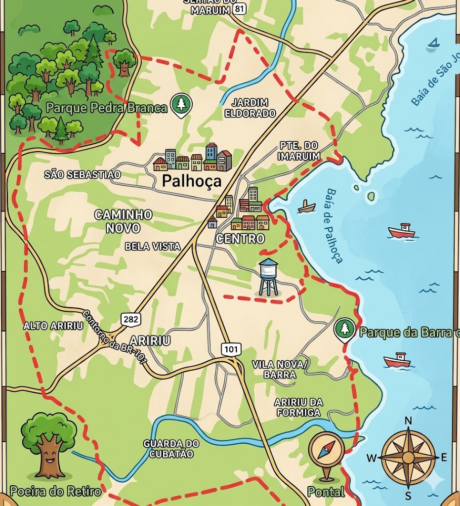
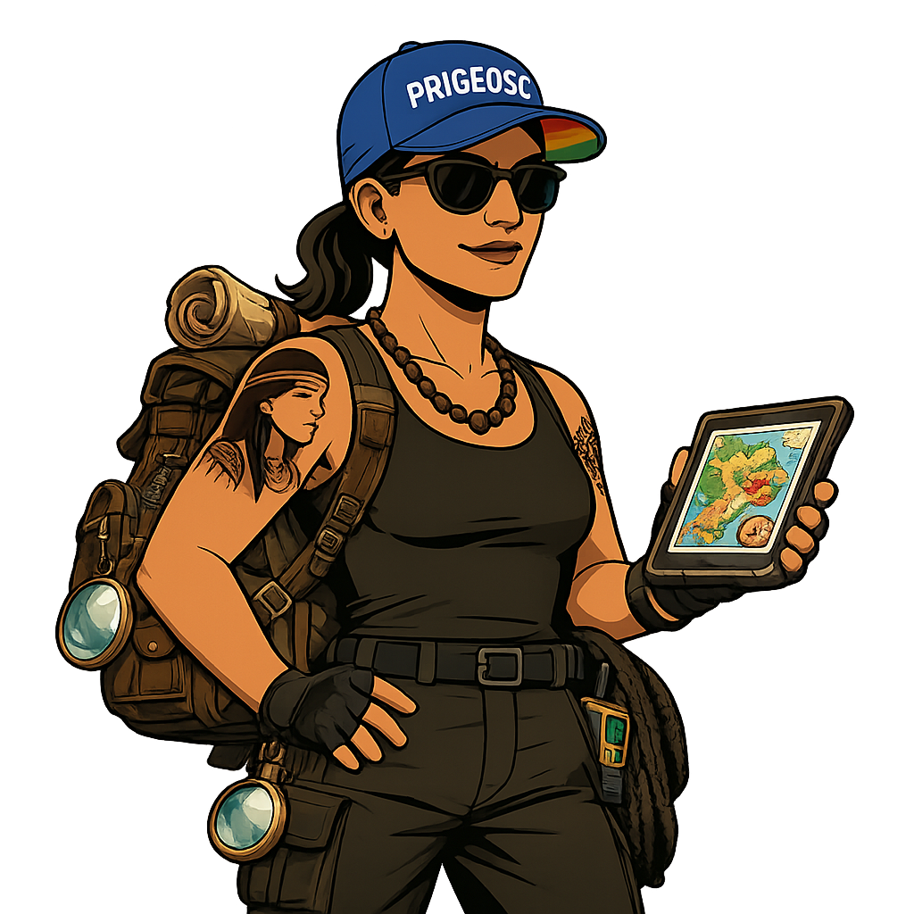
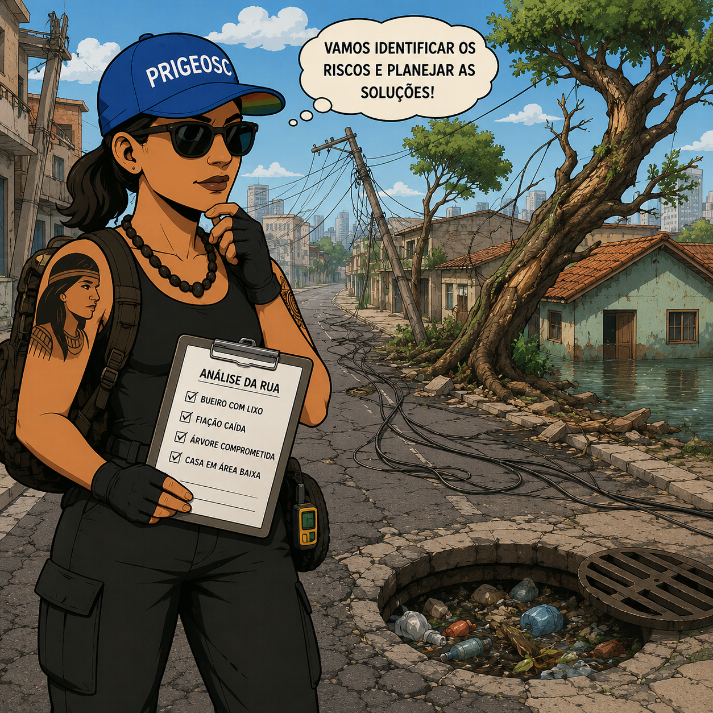
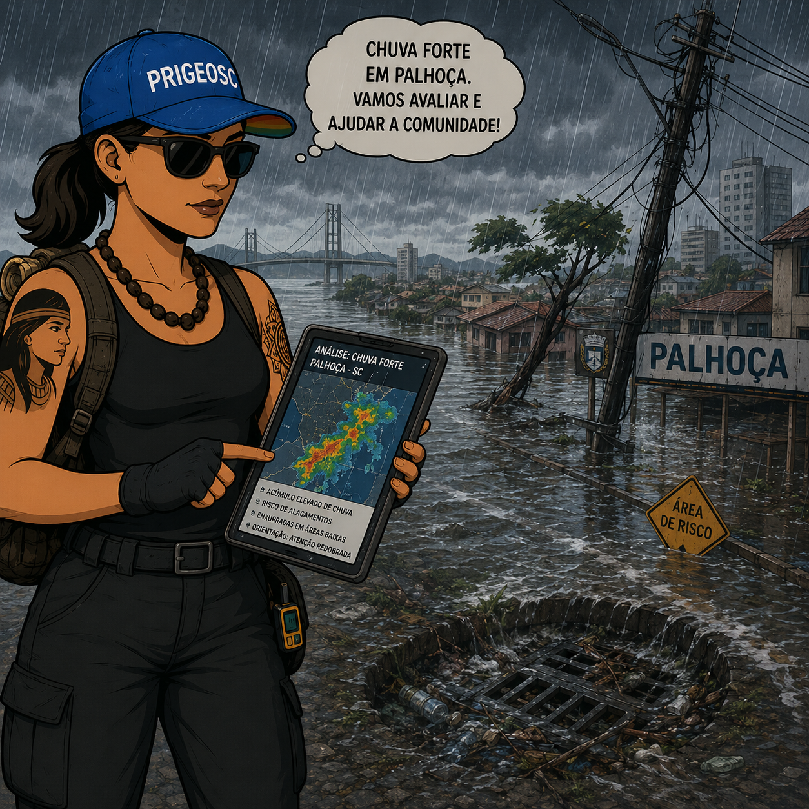
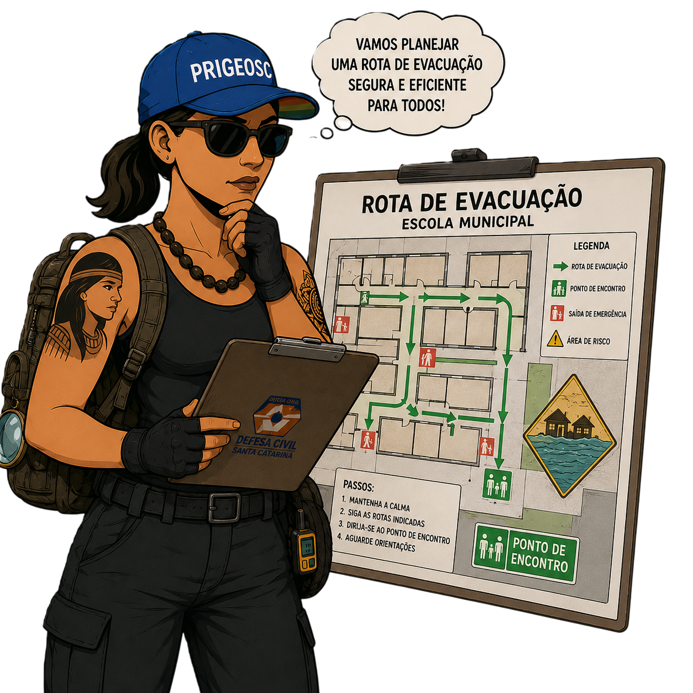
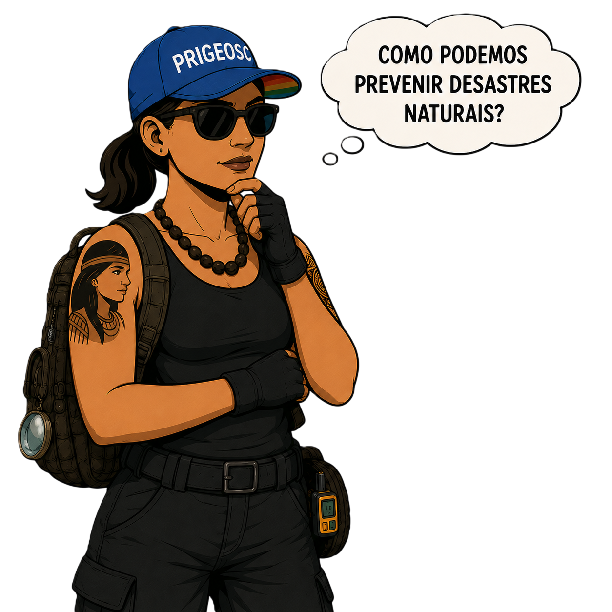
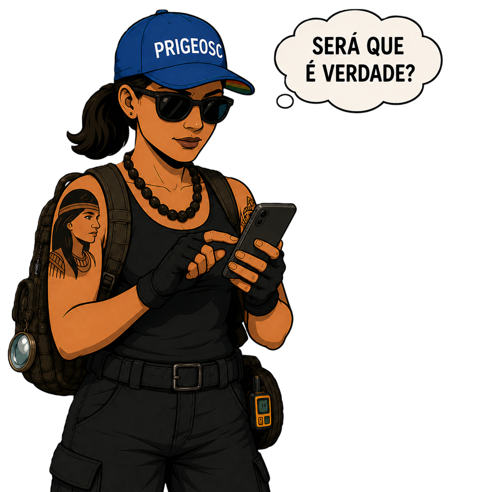
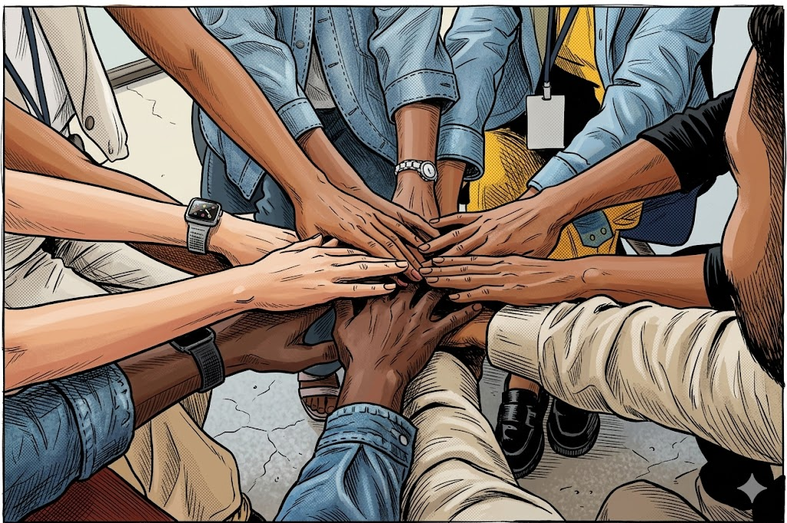

Escola Claudete Maria Hoffmann Domingos - Ponte do Imaruim - Palhoça (SC)
Investigue riscos ambientais, tome decisões seguras, conquiste medalhas e proteja a comunidade.


Progresso: 0/4

Progresso: 0/4

Progresso: 0/4

Progresso: 0/5

Progresso: 0/4

Progresso: 0/5

"Parabéns, Agente Mirim! Você deu um show de cidadania e prevenção aqui em Palhoça. Graças a você, nossa comunidade está muito mais segura e preparada!"
Você concluiu todas as fases, venceu o Grande Desafio da Palhoça e conquistou suas condecorações:
Guarde na memória e use com responsabilidade:
Para mais informações, siga: @prigeosc